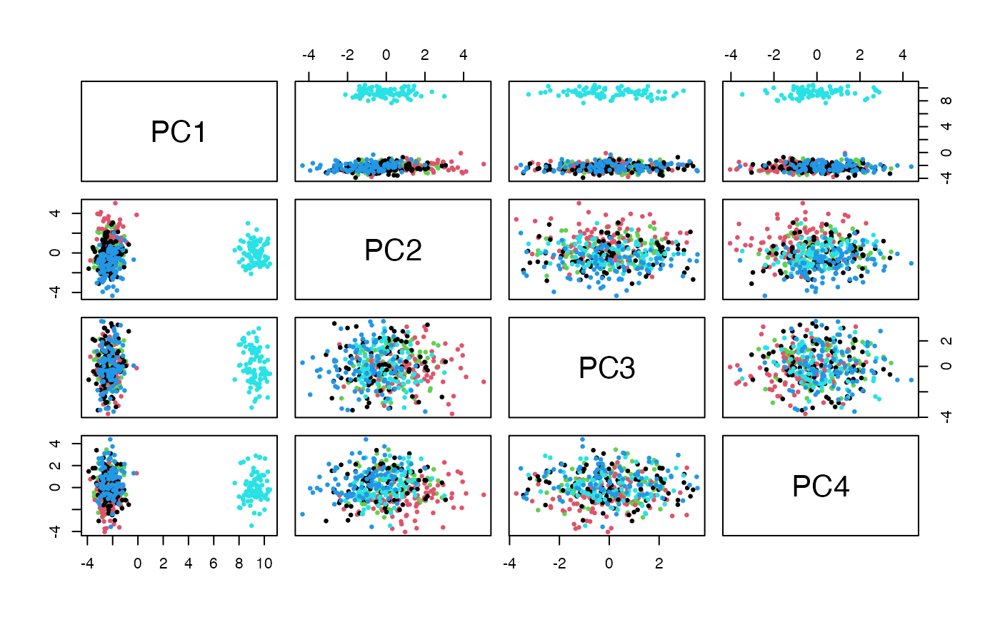
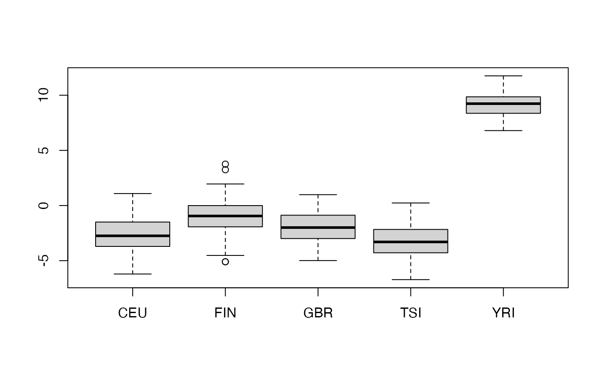

PlinkMatrix: DelayedArray interface to plink bed-type files
Vincent J. Carey, stvjc at channing.harvard.edu
March 15, 2026
Source:vignettes/PlinkMatrix.Rmd
PlinkMatrix.RmdIntroduction
Many genetic studies employ PLINK for data management and analysis.
This package facilitates interrogation of PLINK bed files through the Bioconductor DelayedArray protocol
Demonstration
The example_PlinkMatrix function will
- retrieve a zip archive from a cloud store if needed, and place it in the default BiocFileCache cache
- unzip the cached archive to bed, bim, fam files
- create the DelayedArray interface to the unzipped archive
The example data are those distributed with tensorQTL, transformed to bed using plink2.
library(PlinkMatrix)
gdemo = example_PlinkMatrix()
colnames(gdemo) = gsub("0_", "", colnames(gdemo))
gdemo## <367759 x 445> DelayedMatrix object of type "double":
## HG00096 HG00097 HG00099 ... NA20826 NA20828
## chr18_10644_C_G_b38 0 0 0 . 0 0
## chr18_10847_C_A_b38 0 0 0 . 0 0
## chr18_11275_G_A_b38 0 0 0 . 0 0
## chr18_11358_G_A_b38 0 0 0 . 0 0
## chr18_11445_G_A_b38 0 0 0 . 0 0
## ... . . . . . .
## chr18_80259028_AG_A_b38 1 2 2 . 0 1
## chr18_80259147_G_C_b38 0 0 0 . 0 0
## chr18_80259181_A_G_b38 0 0 0 . 0 0
## chr18_80259190_C_G_b38 1 0 0 . 1 0
## chr18_80259245_C_A_b38 0 0 0 . 0 0Sanity check
We will use ancestry information and approximate PCA to illustrate plausibility of the approach used here.
We have codes for the ancestral origins of samples.
##
## CEU FIN GBR TSI YRI
## 89 92 86 91 87We’ll take a random sample of 1000 SNP and retrieve 10 PCs, then visualize aspects of the reexpression to PCs for discriminating population of ancestry.
library(irlba)
set.seed(1234)
ss = sort(sample(seq_len(nrow(gdemo)), size=1000))
pca = prcomp_irlba(t(gdemo[ss,]),10)
pairs(pca$x[,1:4], col=factor(g445samples$Population.code), pch=19, cex=.5)

SummarizedExperiment wrapper; subsetting with GenomicRanges
data(example_GRanges)
library(SummarizedExperiment)
nse = SummarizedExperiment(list(genotypes=gdemo),
rowData=example_GRanges, colData=g445samples)
nse## class: RangedSummarizedExperiment
## dim: 367759 445
## metadata(0):
## assays(1): genotypes
## rownames(367759): chr18_10644_C_G_b38 chr18_10847_C_A_b38 ...
## chr18_80259190_C_G_b38 chr18_80259245_C_A_b38
## rowData names(0):
## colnames(445): HG00096 HG00097 ... NA20826 NA20828
## colData names(5): Sex Population.code Population.name
## Superpopulation.code Superpopulation.name
little = GenomicRanges::GRanges("chr18:1-100000")
subsetByOverlaps(nse, little)## class: RangedSummarizedExperiment
## dim: 353 445
## metadata(0):
## assays(1): genotypes
## rownames(353): chr18_10644_C_G_b38 chr18_10847_C_A_b38 ...
## chr18_99977_C_T_b38 chr18_99998_G_A_b38
## rowData names(0):
## colnames(445): HG00096 HG00097 ... NA20826 NA20828
## colData names(5): Sex Population.code Population.name
## Superpopulation.code Superpopulation.nameSession information
## R version 4.5.2 (2025-10-31)
## Platform: aarch64-apple-darwin20
## Running under: macOS Sequoia 15.7.4
##
## Matrix products: default
## BLAS: /System/Library/Frameworks/Accelerate.framework/Versions/A/Frameworks/vecLib.framework/Versions/A/libBLAS.dylib
## LAPACK: /Library/Frameworks/R.framework/Versions/4.5-arm64/Resources/lib/libRlapack.dylib; LAPACK version 3.12.1
##
## locale:
## [1] en_US.UTF-8/en_US.UTF-8/en_US.UTF-8/C/en_US.UTF-8/en_US.UTF-8
##
## time zone: America/New_York
## tzcode source: internal
##
## attached base packages:
## [1] stats4 stats graphics grDevices utils datasets methods
## [8] base
##
## other attached packages:
## [1] irlba_2.3.7 PlinkMatrix_0.99.0
## [3] SummarizedExperiment_1.40.0 Biobase_2.70.0
## [5] GenomicRanges_1.62.1 Seqinfo_1.0.0
## [7] DelayedArray_0.36.0 SparseArray_1.10.8
## [9] S4Arrays_1.10.1 abind_1.4-8
## [11] IRanges_2.44.0 S4Vectors_0.48.0
## [13] MatrixGenerics_1.22.0 matrixStats_1.5.0
## [15] BiocGenerics_0.56.0 generics_0.1.4
## [17] Matrix_1.7-4 Rcpp_1.1.1
## [19] BiocStyle_2.38.0
##
## loaded via a namespace (and not attached):
## [1] xfun_0.56 bslib_0.10.0 httr2_1.2.2
## [4] htmlwidgets_1.6.4 lattice_0.22-9 vctrs_0.7.1
## [7] tools_4.5.2 curl_7.0.0 tibble_3.3.1
## [10] RSQLite_2.4.6 blob_1.3.0 pkgconfig_2.0.3
## [13] dbplyr_2.5.2 desc_1.4.3 lifecycle_1.0.5
## [16] compiler_4.5.2 textshaping_1.0.4 htmltools_0.5.9
## [19] sass_0.4.10 yaml_2.3.12 pkgdown_2.2.0
## [22] pillar_1.11.1 jquerylib_0.1.4 cachem_1.1.0
## [25] tidyselect_1.2.1 digest_0.6.39 dplyr_1.2.0
## [28] purrr_1.2.1 bookdown_0.46 fastmap_1.2.0
## [31] grid_4.5.2 cli_3.6.5 magrittr_2.0.4
## [34] withr_3.0.2 filelock_1.0.3 rappdirs_0.3.4
## [37] bit64_4.6.0-1 rmarkdown_2.30 XVector_0.50.0
## [40] bit_4.6.0 otel_0.2.0 ragg_1.5.0
## [43] memoise_2.0.1 evaluate_1.0.5 knitr_1.51
## [46] BiocFileCache_3.0.0 rlang_1.1.7 glue_1.8.0
## [49] DBI_1.3.0 BiocManager_1.30.27 jsonlite_2.0.0
## [52] R6_2.6.1 systemfonts_1.3.1 fs_1.6.6